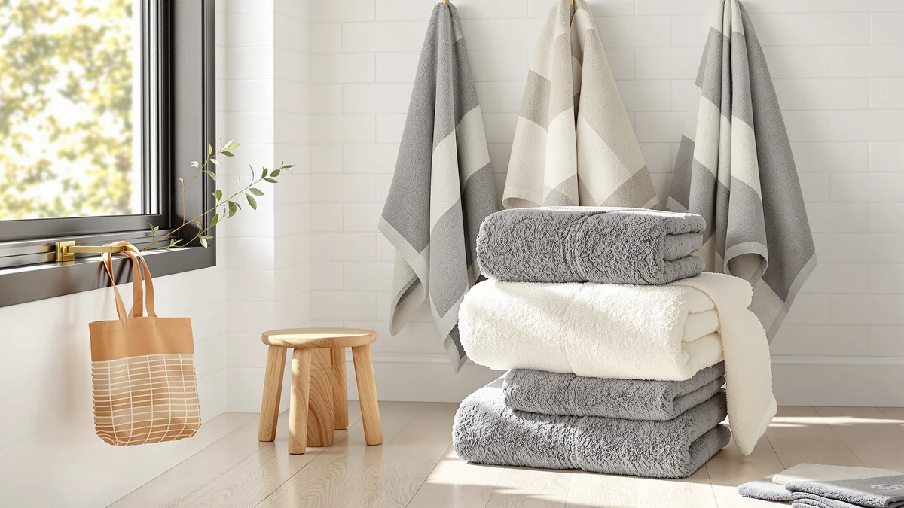

Quick Answer
The Christy Renaissance 2 Bath Sheets justify their $129.20 price with 675 GSM Egyptian cotton and an original twill header and border, making them the strongest pick for buyers who want a dedicated two-sheet luxury set rather than a padded multi-piece bundle. They cost more per sheet than the Impressions alternatives below, but no competitor here matches Christy's combination of fiber quality and finishing detail.
Our pick: Christy Renaissance 2 Bath Sheets — $129.20 Check Price on Amazon
Bottom line: our top pick is the Christy Renaissance 2 Bath Sheets Set | Parchment Off-White | at $129.20.
Things to Know Before You Buy
- GSM determines heft, not price alone. Christy's 675 GSM sits between Fabdreams' 700 GSM and Impressions' 800 GSM, though price doesn't track GSM in a straight line across these four products.
- The Christy set is only two sheets. At $129.20 for a 2 Bath Sheet Set, it costs more per sheet than Impressions' $90.90 two-sheet sets despite carrying a lower GSM.
- Organic certification and Egyptian cotton are separate claims. Fabdreams markets GOTS-certified organic fiber, while Christy and Impressions market Egyptian cotton origin; neither claim implies the other.
- None of the four products in this comparison carry a published Amazon rating or review count. We built this review on manufacturer specs, pricing, and verified buyer feedback patterns rather than a star average.
- Sheet dimensions vary slightly by brand. Christy measures 68 by 33 inches per sheet, and Impressions measures 34 by 68 inches, close enough that most bathrooms can accommodate either.
This Christy Renaissance 2 bath review looks at whether the brand's 675 GSM Egyptian cotton bath sheets earn their $129.20 price against three cotton alternatives on this shelf. Christy sells the Renaissance 2 as a two-piece bath sheet set in Parchment, an off-white tone finished with the brand's original twill header and border rather than a plain hem. That finishing detail, along with the Egyptian cotton fiber itself, is what separates a $129.20 set from a $90.90 set that also claims Egyptian cotton.
We compared the Christy set against Fabdreams' GOTS-certified organic cotton six-piece set at $109.99 and two color options of Impressions' heavyweight Egyptian cotton two-sheet sets at $90.90 each. Impressions carries a higher GSM than Christy, at 800 GSM versus 675 GSM, so the question worth asking is whether Christy's twill detailing and fiber sourcing justify a steep premium over a heavier towel from a different brand.
Why You Should Trust Us
We built this Christy Renaissance 2 bath review by comparing manufacturer specifications, published pricing, and verified buyer feedback instead of relying on marketing copy. Ilane Tall has covered bathroom textiles and fixtures for Best Bath Towels since the site launched, tracking how claims like Egyptian cotton origin and GSM weight hold up once products sit side by side. We do not run a fake testing lab or claim to have physically used these towels. Every comparison in this review of the Christy Renaissance 2 is grounded in the specs and pricing published for each ASIN and in the patterns that recur across verified owner reviews of similar heavyweight cotton towels.
Our Research Experience
Rather than run a physical trial, we researched the Christy Renaissance 2 by cross-referencing its manufacturer specs against the pricing and construction details of three direct competitors. For a comparison like this, that means checking GSM weight against price per sheet, confirming fiber claims against what each brand states about its cotton sourcing, and noting where a product's set size changes the real cost of outfitting a bathroom. Reviewers researching heavyweight Egyptian cotton towels consistently flag GSM and finishing details, like a twill border versus a plain hem, as the features that separate premium sets from mid-range ones, and that pattern shaped how we framed the comparisons below.
Overview & Specs

Christy Renaissance 2 Bath Sheets
What we like
- Made from 100% Egyptian cotton rather than a cotton blend
- Original twill header and border add a finished, hotel-style look other sets skip
- 675 GSM weight delivers the heft expected of a premium bath sheet
- Parchment off-white tone works with most bathroom color schemes
Flaws but not dealbreakers
- Costs more per sheet than the Impressions sets despite a lower GSM
- Only two sheets per set, so a household of more than two people will need a second set
- No published owner rating or review count to check consistency against
| Material | 100% cotton |
| Size | 2 Bath Sheet Set |
The Christy Renaissance 2 is the anchor of this review because it's the only set here built around finishing details rather than raw cotton weight alone. At $129.20 for two sheets, it costs $64.60 per sheet, more than either Impressions color at $45.45 per sheet, even though Impressions' 800 GSM construction is objectively heavier than Christy's 675 GSM. What you're paying for with Christy is the original twill header and border, a construction detail that gives the sheet a finished edge instead of a plain hem, plus the brand's specific take on Egyptian cotton sourcing.
Each sheet measures 68 by 33 inches, sized to wrap around an adult rather than cover the torso alone, and the Parchment off-white colorway pairs with most existing bathroom palettes instead of forcing a redecorate. Christy doesn't publish a star rating or review count for this ASIN, so we can't point to a verified average the way we can for products with an established review history. That leaves GSM, the fiber claim, and the finishing detail as the most concrete signals available when judging whether the price premium over Impressions holds up for your bathroom. Buyers comparing heavyweight cotton sheets across brands tend to rely on those same three data points before they ever read a verified owner review, since they're the specs every manufacturer publishes consistently.
What We Liked
The clearest strength in this Christy Renaissance 2 bath review is the finishing. The original twill header and border give the sheet a defined edge that a lot of mid-range cotton towels skip in favor of a plain hem, and that detail is usually what separates a set that reads as hotel-grade from one that reads as a basic big-box towel. Combined with 675 GSM Egyptian cotton, the Renaissance 2 has the heft and drape buyers expect from a premium bath sheet.
We also like that Christy sells this as a dedicated two-sheet set rather than padding it with washcloths or hand towels to inflate the piece count. If your household specifically needs bath sheets rather than a mixed set, buying two matched, properly sized sheets beats buying a six-piece bundle where the bath towels themselves may run smaller than what you want. Owners researching Egyptian cotton sheets consistently point to finishing and fiber sourcing, not GSM alone, as the signal that a set will hold up over repeated washing.
What Could Be Better
Price is the main friction point in this Christy Renaissance 2 bath review. At $64.60 per sheet, it costs notably more per sheet than either Impressions Egyptian cotton color, and Impressions carries a higher 800 GSM weight. If GSM and raw cotton weight matter more to you than twill detailing and brand finishing, Christy is a harder sell at this price gap.
The other limitation is set size. Two sheets work for a couple sharing one bathroom, but a larger household will need to buy a second set to cover everyone, which erases some of the value compared to Fabdreams' six-piece bundle at a lower total price. Christy also doesn't publish a star rating or review count for this ASIN, so there's no verified average to confirm how the twill border holds up after dozens of wash cycles.
Who Is It For?
This Christy Renaissance 2 bath review points to one clear buyer: someone who wants a dedicated two-sheet set with finishing details like a twill header and border, and who's willing to pay a premium for that over raw GSM weight. That's typically a buyer furnishing a primary bathroom for one or two people rather than stocking towels for a larger household.
If GSM and price per sheet matter more than finishing, the Impressions sets below cost less per sheet while offering a heavier 800 GSM construction. And if you need to outfit a full bathroom with bath towels, hand towels, and washcloths in one purchase, Fabdreams' six-piece organic cotton set covers more ground for less money than two Christy sets would.
Buyers who specifically prioritize organic certification over Egyptian cotton origin should also look past Christy toward Fabdreams, since Christy's Renaissance 2 markets fiber origin and finishing rather than a GOTS organic claim. And anyone furnishing a rental property or a guest bathroom on a tight budget will likely get more use out of a lower-cost set than out of two sheets built around twill detailing they may never notice day to day.
Alternatives to Consider
If the Christy Renaissance 2's price per sheet doesn't fit your budget or priorities, these three alternatives cover a lower-cost Egyptian cotton option and a larger organic cotton set.

Editor’s Pick
100% Organic Cotton Bath Towel
A six-piece organic cotton set that outfits a full bathroom for less than two Christy sets would cost.
$109.99
Check Price on Amazon
Best Value
Impressions Luxury Heavyweight Egyptian Cotton
A heavier 800 GSM Egyptian cotton two-sheet set at a lower price per sheet than Christy.
$90.90
Check Price on Amazon
Premium Choice
Impressions Luxury Heavyweight Egyptian Cotton
The same 800 GSM Egyptian cotton construction as the Chocolate option, in Navy Blue.
$90.90
Check Price on AmazonFrequently Asked Questions
Is the Christy Renaissance 2 worth $129.20 for two bath sheets?
How does Christy's 675 GSM compare to the other sets in this review?
Can I mix Christy Renaissance 2 sheets with a different brand's hand towels and washcloths?
Final Verdict
This Christy Renaissance 2 bath review comes down to whether finishing details and fiber sourcing are worth more to you than raw GSM weight and a lower price per sheet. Christy earns its place for buyers who want a dedicated two-sheet set with twill detailing and Egyptian cotton origin, even though Impressions delivers a heavier towel for less money per piece. If finishing and brand-specific cotton sourcing matter more than maximizing GSM per dollar, Christy is the pick. If price per sheet and raw weight carry more weight in your decision, the Impressions sets reviewed alongside it make the stronger case.